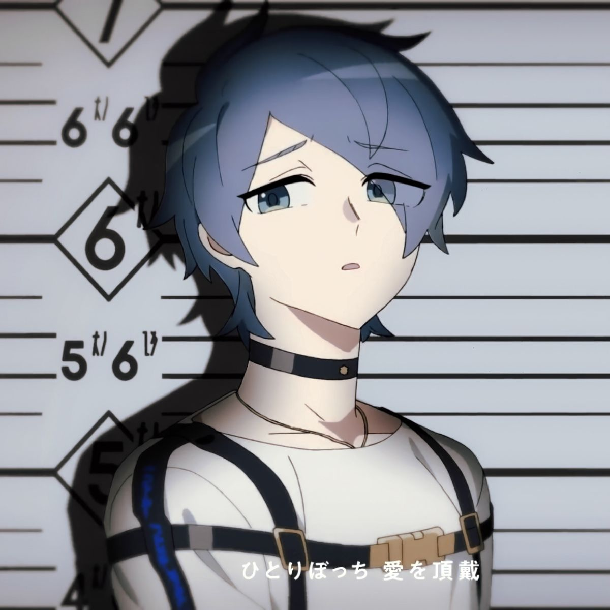
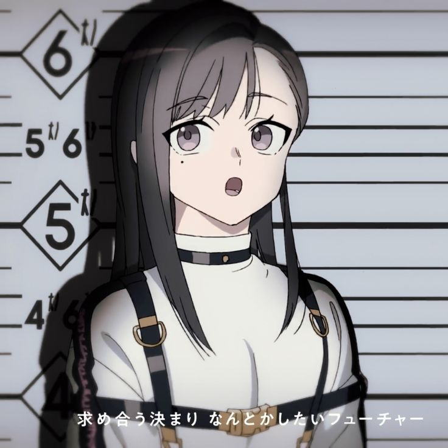
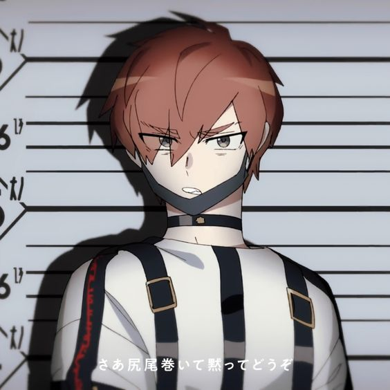
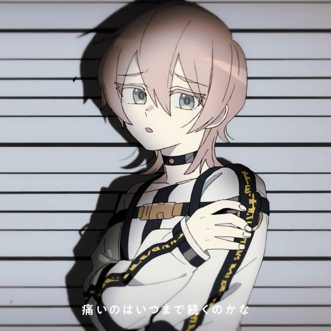

| PRISONER | DESCRIPTION | TRIAL 1 RESULTS |
| Sakurai Haruka  |
A quiet young prisoner who's normally always looking at the ground. At first, he would only respond to Es’s questions with a word or two. But as he starts to open up more through conversation, he slowly starts to become more talkative. When you're able to communicate with him properly, you can see his true personality: a kind and gentle person. | INNOCENT |
| Kashiki Yuno  |
A female high school prisoner who appears trim and tidy. A pretty young girl who has a gentle, laid-back and whimsical attitude. She's surprisingly good at reading the room, and is able to stop conflicts from breaking out. She has a habit of jokingly asking for money. She's quick to get friendly with people, even in her first meeting with Es. | INNOCENT |
| Kajiyama Fuuta  |
A young, strong-minded prisoner with fierce-looking eyes. Out of everyone in MILGRAM, he is the most impulsive and has a rough temper. He has a strong sense of justice, and will strongly oppose any wrongdoing. When talking to Es, he protested on his own rights, and demanded better living conditions. | GUILTY |
| Kusunoki Mu  |
A bishoujo prisoner who seems to be cut off from the rest of Japan, and has an air of transparency. She appears to be indecisive but is actually very blunt with her words, and can’t accept being in the unusual situation in MILGRAM. When meeting Es, she appeared very wary. Her seemingly well upbringing suggests that she was likely born into a fortunate family. Either due to this or her high pride, when she runs into conflicts with others, she immediately starts to cry or whine. | INNOCENT |
| Kirisaki Shidou |
A tall male prisoner with gentle expressions. He is considered to be one of the more senior prisoners in MILGRAM, and he is cool-headed and calm, or at least not easily perturbed. When meeting with the prison guard, realising that they were far younger than himself, he seemed to treat them like a child in an attempt to make them feel comfortable. Despite being in an unfamiliar place like MILGRAM, he still wishes for himself to be consented to capital punishment. | INNOCENT |